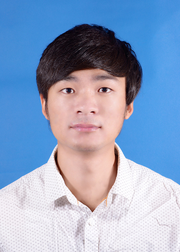

Jinglong WangPhD applicant
School of Energy and Power Engineering |
 |

Biography
I am a PhD candidate who want to go to a top university for further study. Before that, I obtained my master degree in the School of Energy and Power Engineering, Xi 'an Jiaotong University, supervised by Prof. Yubing Tao in June 2020. Previously, I received the Bachelor's degree from Department of Process Equipment and Control Engineering in Zhengzhou University in 2017, under the supervision of Associate Prof. Dongwei Zhang.
My previous research is aimed at the numerical calculation of heat and mass transfer of sulfuric acid vapor condensation on the heat exchanger surface during the condensation process of industrial flue gas. Meanwhile, the user - defined equation (DUFs) was used to complete the numerical prediction. In addition, through participating in a series of mathematical modeling competitions, I have been exposed to many advanced algorithms, which can provide a powerful boost for my future study.
If you are interested in me, Please feel free to send me an email.
News
- [08/2020] One paper about domain generalization was accepted by TMI.
- [07/2020] I have received the "CUHK Young Scholars Thesis Award 2019", the only awardee in the Faculty of Engineering.
- [07/2020] Three papers were accepted by ECCV 2020, TMI, and MedIA.
- [06/2020] Four papers were accepted by MICCAI 2020.
- [06/2020] One paper about multi-site learning was accepted by TMI.
- [05/2020] Two papers about semi-supervised learning for medical image analysis were accepted by TMI and TNNLS.
- [04/2020] One paper about unsupervised point cloud analysis was accepted by ACM TOG.
- [02/2020] One paper about multi-site learning was accepted by TMI.
Education
-
Xi'an Jiaotong University, Xi'an, Shaanxi, ChinaSept. 2017 – Jun. 2020
Master specialized in Engineering Thermophysics
GPA: 3.18/4.0(83.23/100),Advisor: Prof. Tao Yubing
-
Zhengzhou University, Zhengzhou, Henan, ChinaSept. 2013 – Jun. 2017
Bachelor specialized in Process Equipment and Control Engineering
GPA: 3.43/4.0(85.16/100), Integrated Ranking: 2/107
Research Projects
-
the National Key R&D Program of China (2016YFB0601100)
Industrial waste heat recovery technology; Condensation characteristics of sulfuric acid vapor
Selected Publications [Google Scholar]
-
* indicates equal contribution; † indicates corresponding authorship.
2020
-
DoFE: Domain-oriented Feature Embedding for Generalizable Fundus Image Segmentation on Unseen Datasets
Shujun Wang, Lequan Yu†, Kang Li, Xin Yang, Chi-Wing Fu, Pheng-Ann Heng.
IEEE Transactions on Medical Imaging (TMI), 2020. -
Learning from Extrinsic and Intrinsic Supervisions for Domain Generalization
Shujun Wang, Lequan Yu†, Caizi Li, Chi-Wing Fu, Pheng-Ann Heng.
European Conference on Computer Vision (ECCV), 2020.[code]
-
Robust Medical Image Segmentation from Non-expert Annotations with Tri-network
Tianwei Zhang*, Lequan Yu*, Na Hu, Su Lv, Shi Gu.
Medical Image Computing and Computer Assisted Intervention (MICCAI), 2020. -
Dual-Teacher: Integrating Intra-domain and Inter-domain Teachers for Annotation-efficient Cardiac Segmentation
Kang Li, Shujun Wang, Lequan Yu†, Pheng-Ann Heng.
Medical Image Computing and Computer Assisted Intervention (MICCAI), 2020. -
Difficulty-aware Meta-learning for Rare Disease Diagnosis
Xiaomeng Li, Lequan Yu, Yueming Jin, Chi-Wing Fu, Lei Xing, Pheng-Ann Heng.
Medical Image Computing and Computer Assisted Intervention (MICCAI), 2020. -
Deep Mining External Imperfect Data for Chest X-ray Diseases Screening
Luyang Luo*, Lequan Yu*, Hao Chen, Quande Liu, Xi Wang, Jiaqi Xu, Pheng-Ann Heng.
IEEE Transactions on Medical Imaging (TMI), 2020. -
Semi-supervised Medical Image Classication with Relation-driven Self-ensembling Model
Quande Liu, Lequan Yu†, Luyang Luo, Qi Dou, Pheng-Ann Heng.
IEEE Transactions on Medical Imaging (TMI), 2020.[code]
-
Towards Cross-modality Medical Image Segmentation with Online Mutual Knowledge Distillation
Kang Li, Lequan Yu†, Shujun Wang, and Pheng-Ann Heng.
AAAI Conference on Artificial Intelligence (AAAI), 2020. -
Unsupervised Detection of Distinctive Regions on 3D Shapes
Xianzhi Li, Lequan Yu, Chi-Wing Fu, Daniel Cohen-Or, Pheng-Ann Heng.
ACM Transactions on Graphics (ACM TOG), 2020.[code]
-
Transformation-consistent Self-ensembling Model for Semi-supervised Medical Image Segmentation
Xiaomeng Li, Lequan Yu, Hao Chen, Chi-Wing Fu, Lei Xing, Pheng-Ann Heng.
IEEE Transaction on Neural Network and Learning System (TNNLS), 2020.[code]
Honors & Awards
| Qianheng Huang Scholarship, Dec. 2019 |
| Scholarship for Freshmen, 2017 |
| Outstanding Fresh Graduates of Henan Province, Apr. 2017 |
| Meritorious Winner, Mathematical Contest in Modeling (MCM), 2016 |
| National Encouragement Scholarship, Nov. 2016 |
| Excellent Student Cadre, Dec. 2016 |
| Excellence Award of the 10th National Zhou Peiyuan University Mechanics Competition, Aug. 2015 |
| National Encouragement Scholarship, Nov. 2015 |
| Merit Student, Dec. 2015 |
| National Encouragement Scholarship, Nov. 2014 |
| Merit Student, Dec. 2014 |
| First Prize of Henan Province in 2014 China Undergraduate Mathematical Contest in Modeling |
| Excellent results in the National Computer Rank Examination Level 2 C Language Programming Exam |
Information Technology
| Simulation and Design | SoidWorks, Auto CAD, Gambit, Fluent, Matlab, Tecplot |
| Basic Software | Origin, Visio, Word, Excel, Powerpoint |
| Computer Language | C, Fortran |